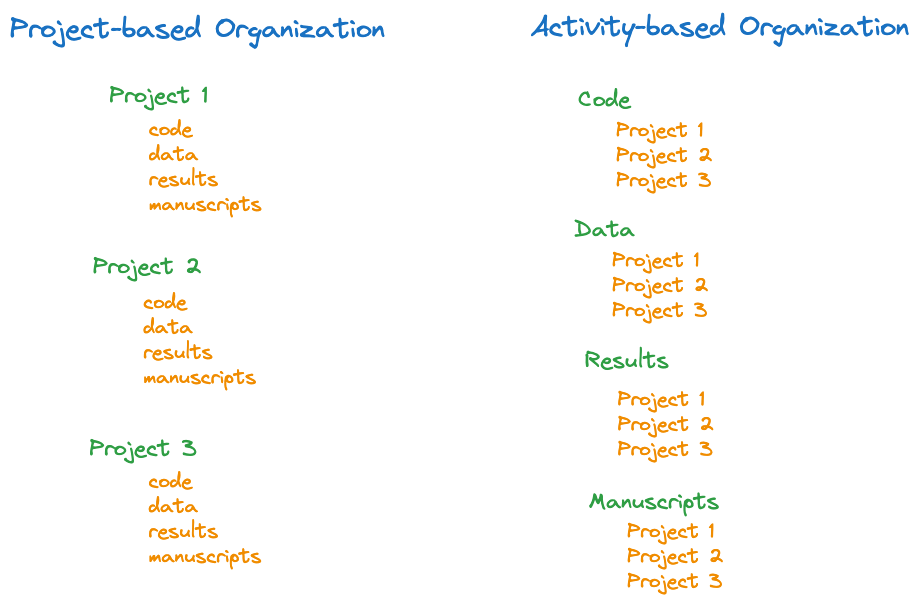

duckload <- function(tableName, whereClause=NULL, dbName="ads.ddb") {
if (!is.null(tableName)) {
if (!("duckdb" %in% (.packages()))) {
suppressWarnings(library("duckdb"))
message("duckdb library was loaded to execute duckload().")
}
con <- dbConnect(duckdb(), dbdir=dbName, read_only=TRUE)
query_string <- paste("SELECT * from ", tableName)
if (!is.null(whereClause)) {
query_string <- paste(query_string, " WHERE ", whereClause)
}
df_ <- dbGetQuery(con, query_string)
dbDisconnect(con)
return (df_)
} else {
return (NULL)
}
}11 Reproducible Research and Data Analysis
11.1 What, me Worry?
Reproducibility in research means to give others the ability to use the same materials as were used by an original investigator in an attempt to arrive at the same results. This is not the same as replicability, the ability to repeat a study, collect new data, and duplicate the results of an original investigator. To reproduce results, we need to have access to the same data, analytics, and code. To replicate results, we need to know exactly how a study or experiment was conducted, which methods and instruments of measurements were used, and so forth, in order to set up a new study or experiment.
As a first-year graduate student in statistics or data Science, why would you worry about reproducibility in research? You are unlikely to have your own research project that involves data collection. You are working on data analytics problems by yourself, why share your code with the world? You are planning to work as a data scientist in industry, why worry about concepts of reproducible research?
First, reproducibility in research and data analysis is not about research; it is about the need to perform complex tasks in an organized workflow that builds trust, transparency, and accountability. Here are some reasons why you need to worry about reproducibility:
You hardly ever work alone. Team members and supervisors need to be able to understand and judge your work.
You need to plan for someone else working on your stuff. Taking over someone else’s code can be a miserable experience. If that task falls on you, what information would you have liked to have to pick up the pieces?
Software changes. Even if you are the only one working on the code—for now—do you ever made a mistake and wished you could revert back to a previous working version? Have you ever lost code or had to deal with incompatible versions on different machines? How do you prove (to yourself) that a change fixed or broke the code? How do you maintain the analyses for different versions of the same data?
Data and analytics are key to reproducibility. If you do not have the data or the program, you cannot validate much in today’s data-driven world. As a statistical programmer, you are at the center of someone else’s reproducibility story.
Unless you work in purely methodological, theoretical work, as a statistician or data scientist you will be working on data problems of others. That might be an employer or a consulting client. Your work feeds into processes and systems they are accountable for. You need to ensure that there is accountability for your part of the work.
Many analytic methods are inherently non-reproducible because they depend on stochastic elements. Making a statistical program reproducible means to understand all instances in which random numbers play a role (see Chapter 9). You might not be able to control all of them and need to decide when a sufficient level of reproducibility has been reached. It might be necessary to fix random number seeds, but sacrificing performance by turning off multi-threading is a bridge too far.
Reproducibility is not guaranteed by just reading the research paper. A common misconception is that methods sections in papers are sufficiently detailed to reproduce a result. Data analyses are almost never described in sufficient detail to be reproducible. Put yourself in the shoes of the reader and imagine to provide them with a data set and the pdf of the published paper. Would they be able to analyze the data and derive the effect sizes and \(p\)-values in Table 3 of the paper? Even a nod at the software used is not enough. “Analyses were performed with PROC MIXED in SAS.” So what?! There are a million ways to analyze an experiment incorrectly with PROC MIXED by fitting the wrong model, messing up comparisons, misinterpreting parameter estimates, etc.
11.2 Improving Reproducibility of Statistical Programs
Here are some points to increase the reproducibility of your programs and data analysis
Have a Plan & Document
Begin by writing a project plan or protocol that includes methods, materials, data sets, software, packages, etc., you intend to use. Make a note of versions, operating systems, cloud instances and other aspects of computingn architecture that can have bearing on your approach and results.
Consider this a living document, because things will change. You might find out that the package you plan for a particular analysis turns out to be insufficient in capabilities and performance. Document why you are making the change.
The project plan should be under version control (Section 11.2.4).
Plan how to organize the directory structure of your project. Suppose your project involves some data, code, analysis output, and manuscripts you work on. A project-based organization treats each project as a separate directory with sub-directories for data, code, results, and manuscripts. An activity-based organization uses data, code, results, and manuscripts as the highest-level folders and organizes projects within those (Figure 11.1).

The best organization is up to you, I generally prefer the project-based over activity-based approach. Some things to keep in mind:
If projects do not overlap in data and code, it makes sense to deal with them separately. Projects that share large amounts of data are best managed together.
Avoid duplication, especially when it comes to data. Keeping multiple copies of the same data is bad practice and a recipe for disaster when data changes. The same goes for code.
Modularity is your friend. Writing modular code that assembles programs from functions and components is a great way to organize the work. You can keep the modules separate from the individual projects. The code for the project differs in which modules are used and how they are being called.
Raw data should never be modified—it should be in a read-only state. The processed data that serves as the input for analytics is kept separate from the raw data.
Project directories that are self contained can be easily compressed, backed-up, and shared. Achieving self-containedness can be at odds with avoiding duplication; you have to think through and manage the tradeoffs.
Anything generated from code (output, tables, images) goes into a separate folder. Depending on the volume of results, separate directories for tables, images, text output is a good idea.
Record receipt and distribution of assets. Keep a journal (or README file) where you track which data was received when from whom, and where you stored it.
No Spreadsheets!
Avoid spreadsheets at all cost. If raw data comes to you in the form of spreadsheets, make them immutable (read-only) and extract the “real” data immediately. Spreadsheets are very common and a horrible format for analytic data. We prefer tabular data in rows and columns where each row is an observation and each column is a variable. The primary data source for statistical analysis should not contain graphs or other calculations.
Spreadsheets give the appearance of tabular data but they are usually not cleanly organized this way. Some cells contain images, text and other forms of information that does not fit the tabular layout. Cells make references to other (sheets and) cells that make it difficult to know what data you are actually dealing with.
If your primary data is in spreadsheets, the data is of constant danger of being corrupted by changes to the spreadsheet. It is too easy to modify raw data by accidentally typing in a cell.
Metadata
Metadata is data about your data. It provides information about the data but not the data itself.
Suppose someone sends you a CSV file, the only metadata are names of the variables in the file. Some CSV files won’t even have those. What do the variable names mean? Are those the best names to place on graphs? What are the units of measurements? What else do you need to know about the variables? Are there missing values, if so, how are they coded? When was the data created and by whom? What were the purpose of data collection and the means of data collection? Has the data been processed?
The metadata we are most in need of in statistical programming is called structural metadata, it describes the structure of data sets and databases (tables, columns, indices, etc.). This information is tracked in data dictionaries (also called codebooks). A data dictionary might contain for each column in a data set the following:
- The exact variable name in the file or table.
- A long variable name that serves as a label on results (graphs, tables).
- A variable-sized string column that explains what the variable means, how it was measured, its units, etc.
- Information on how values are formatted, e.g, date, datetime formats, reference values for dates/times.
- Statistical summaries such as min, max, mean, and checksums.
Your data might not come with dictionary information, so you will have to create the dictionary and track down the needed information.
Literate Programming
What it is
The concept of literate programming was introduced by Knuth (1984) and refers to programs that are not written with a focus on the compiler but are organized in the order demanded by the logic of the programmer’s thoughts. In literate programming the program logic is written out in natural language, supplemented by code snippets or chunks. While literate programming was a concept at the time when Knuth proposed it, it is commonplace today, in particular in data science. Programming environments that combine markdown with code are a manifestation of literate programming: Jupyter Notebook, R Markdown, Quarto, and many more.
Literate programs are different from well-documented code or code that includes documentation as part of the file. The flow of these programs still follow the logic of the computer, not the logic of human thought. In literate programming the code follows the structure of the documentation. Chapter 12 is a literate program that implements from scratch an important iterative statistical algorithm: iteratively reweighted least squares (IRLS).
In general, we should weave code and text into a complete reference of our work. The document should:
- download or otherwise load/generate data
- reproduce steps to munge data
- recreate analysis steps
- create figures and tables
- explain any and all steps along the way
Version Control
Version control refers to the management and tracking of changes in digital content; mostly files and mostly code. Any digital asset can be placed under version control. Even if you are working (mostly) by yourself, using a version control system is important. Employers consider it a non-negotiable skill and you do not want to stand out as the applicant who does not know how to use git. The benefits of version control systems are so big, even the solo programmer would be remiss not using it.
What does a version control system like git do for you:
It keeps track of files and their changes over time.
It saves changes to files without duplicating the contents, saving space in the process.
It groups content in logical units (branches) that are managed together. For example, all files associated with a particular build of a software release are kept in a branch.
It is a time machine, allowing you to reconstruct a previous state of the project and to see the complete history of the files.
It is a backup machine, making sure you have access to older versions of files and that changes do not get lost.
It allows you to perform comparisons between versions of files and to reconcile their differences.
It allows you to safely experiment with code without affecting code others depend on.
It allows you to see which parts of a project are worked on most/least frequently.
It is a collaborative tool, that reconciles changes to files made by multiple developers. Version control systems allow you to submit changes to someone else’s code.
By supporting modern continuous integration/continuous deployment (CI/CD) principles, a version control system can automate the process of testing and deploying software.
The list goes on and on. The main point is that these capabilities and benefits are for everyone, whether you work on a project alone or as a team member.
Tip
Oh how I wish there were easily accessible version control systems when I did my Ph.D. work. It involved a lot of programming algorithms and the analysis of real data sets. Developing the code took months to years and went through many iterations. I made frequent backups of the relevant files using really cool storage technology using special 1GB-size cartridges and a special reader. There were disks labeled “January 1993”, “March 1993”, “December 1993”, “Final”, “Final-V2”, and so forth. The storage technology was discontinued by the manufacturer and the cartridges are useless today. I am not able to access the contents even if the bits have not rotted on the media by now.
To study how the algorithm I needed to write for the dissertation evolved over time, I would have to go through all the backups and compare files one by one. A version control system will show me the entire history of changes in one fell swoop.
Using a cloud-based version control system would have avoided that headache. Alas, that did not exist back then.
There are many version control systems, Git, Perforce, Beanstalk, Mercurial, Bitbucket, Apache Subversion, AWS CodeCommit, CVS (Concurrent Versions System, not the drugstore chain), and others.
The most important system today is Git. GitHub and GitLab are built on top of git. What is the relationship? Git is a local version control system, it runs entirely on the machine where it is installed and manages file changes there. GitHub and GitLab are a cloud-based systems that allow you to work with remote repositories. In addition to supporting Git remotely, GitHub adds many cool features to increase developer productivity. The files for the pages you are reading are managed with Git and stored in a remote repository on GitHub (the URL is https://github.com/oschabenberger/oschabenberger-github.io-sp). GitHub also hosts the web site for the text through GitHub Pages. GitHub Actions can be set up so that the web site (the book) automatically rebuilds if any source files changes.
11.3 Git Crash Course
Git is installed on your machine, it is a local tool for versioning files. You can perform all major Git operations (clone, init, add, mv, restore, rm, diff, grep, log, branch, commit merge, rebase, etc.) without an internet connection. The collaborative aspect of version control comes into play when you use a Git service provider such as GitHub or GitLab. Besides making Git a tool for multi-user applications, using GitHub or GitLab also gives you the ability to work with remote repositories; you can push your local changes to a server in the cloud, making it accessible to others and making it independent of the local workstation. Just because you push a repository to GitHub does not necessarily give everyone on the internet access to it—you manage whether a repository is private or public.
Installing Git
There are several ways to get Git on your machine, see here. On MacOS, installing the XCode Command Line tools will drop git on the machine. To see if you already have Git, open a terminal and check:
➜ Data Science which git
/usr/bin/gitThe executable is installed in /usr/bin/git on my MacBook.
Basic Configuration
There are a million of configuration options for Git and its commands. You can see the configuration with
➜ git config --listTo connect to GitHub later, add your username and email address to the configuration:
➜ git config --global user.name "First Last"
➜ git config --global user.email "first.last@example.com"You can have project-specific configurations, simply remove the --global option and issue the git config command from the project (repository) directory.
Repositories
A repository is a collection of folders and files. Repositories are either cloned from an existing repository or initialized from scratch. To initialize a repository, change into the root directory of the project and issue the git init command:
Data Science cd "STAT 5014"
➜ STAT 5014 pwd
/Users/olivers/Documents/Teaching/Data Science/STAT 5014
➜ STAT 5014 git init
Initialized empty Git repository in /Users/olivers/Documents/Teaching/Data Science/STAT 5014/.git/
➜ STAT 5014 git:(main)To get help on git or any of the git commands, simply add --help:
➜ git --help
➜ git status --help
➜ git add --helpStages of a file
A file in a Git repository goes through multiple stages (Figure 11.2). At first, the file is unmodified and untracked. A file that was changed in any way is in a modified state. That does not automatically update the repository. In order to commit the change, the file first needs to be staged with the git add command.
When you issue a git add on a new file or directory, it is being tracked. When you clone a repository, all files in your working directory will be tracked and unmodified.

A file that is staged will appear under the “Changes to be committed” heading in the git status output.
Once you commit the file it goes back into an unmodified and tracked state.
Tracking files
To track files in a repository, you need to explicitly add them to the file tree with git add. This does not push the file into a branch or a remote repository, it simply informs Git which files you care about.
➜ git add LeastSquares.R
➜ git add *.Rmd
➜ git add docs/The previous commands added LeastSquares.R, all .Rmd files in the current directory, and all files in the docs subfolder to the Git tree. You can see the state of this tree any time with
➜ git statusgit status shows you all files that have changed as well as files that are not tracked by Git and are not ignored. For example, after making some changes to the quarto.yml and to reproducibility.qmd files since the last commit, the status of the repository for this material looks as follows:
➜ StatProgramming git:(main) ✗ git status
On branch main
Your branch is up to date with 'origin/main'.
Changes not staged for commit:
(use "git add <file>..." to update what will be committed)
(use "git restore <file>..." to discard changes in working directory)
modified: _quarto.yml
modified: docs/reproducibility.html
modified: docs/search.json
modified: reproducibility.qmd
Untracked files:
(use "git add <file>..." to include in what will be committed)
.DS_Store
.gitignore
.nojekyll
.python-version
StatProgramming.Rproj
_book/
ads.ddb
customstyle.scss
data/
debug_ada.R
debug_ada.Rmd
images/
latexmacros.tex
sp_references.bib
no changes added to commit (use "git add" and/or "git commit -a")Two more files have been noted by Git as modified, docs/reproducibility.html and docs/search.json. These files are generated by Quarto when the content of the modified files is being rendered. They will be added to the next commit to make sure the website is up to date and not just the source (.qmd) files.
git add can be a bit confusing because it appears to perform multiple functions: to track a new file and to stage a file for commit. If you think of git add as adding precisely the content to the next commit, then the multiple functions roll into a single one.
An ignored file is one for which you explicitly tell Git not to worry about. You list those files in a .gitignore file. (You can have multiple .gitignore files in the directory hierarchy, refer to the Git documentation on how they interact. The typical scenario is a .gitignore file in the root of the repository.)
The contents of the following .gitignore file state that all .html files should be ignored, except for foo.html. Also, StatLearning.Rproj will be ignored.
➜ cat .gitignore
*.html
!foo.html
StatLearning.RprojFiles that are listed in .gitignore are not added to the repository and persist when a repository is cloned. However, if a file is already being tracked, then adding it to .gitignore does not untrack the file. To stop tracking a file that is currently tracked, use
git rm --cached filename to remove the file from the tree. The file name can then be added to the .gitignore file to stop the file from being reintroduced in later commits.
Files that you want to exclude from tracking are often binary files that are the result of a build or compile, and large files. Also, if you are pushing to a public remote repository, make sure that no files containing sensitive information are added.
Committing changes
Once you track a file, Git keeps track of the changes to the file. Those changes are not reflected in the repository until you commit them with the commit command. A file change will not be committed to the repository unless it has been staged. git add will do that for you.
It is a good practice to add a descriptive message to the commit command that explains what changes are committed to the repository:
➜ git commit -m "Early stopping criterion for GLMM algorithm"If you do not specify a commit message, Git will open an editor in which you must enter a message.
Since only files that have been added with git add are committed, you can ask Git to notice the changes to the files whose contents are tracked in your working tree and do corresponding git adds for you by adding the -a option to the commit:
➜ git commit -a -m "Early stopping criterion for GLMM algorithm"What happens when you modify a file after you ran git add but before the net commit? The file will appear in git status as both staged and ready to be committed and as unstaged. The reason is because Git is tracking two versions of the file now: the state it was in when you first ran git add and the state it is in now, which includes the modifications since the last git add. In order to stage the most recent changes to the file, simply run git add on the file again.
Remote repositories
The full power of Git comes to light when you combine the local work in Git repositories with a cloud-based version control service such as GitHub or GitLab. To use remote repositories with Git, first set up an account, say with GitHub.
The Git commands to interact with a remote repository are
git pull: Incorporates changes from a remote repository into the current branch. If the current branch is behind the remote, then by default it will fast-forward the current branch to match the remote. The result is a copy of changes into your working directory.git fetch: Copies changes from a remote repository into the local Git repository. The difference betweenfetchandpullis that the latter also copies the changes into your working directory, not just into the local repo.git push: Updates remote references using local references, while sending necessary objects.git remote: Manage the set of remote repositories whose branches you track.
Note
If you have used other version control systems, you might have come across the terms pushing and pulling files. In CVS, for example, to pull a file means adding it to your local checkout of a branch, to push a file means adding it back to the central repository.
With Git, push and pull command only come into play when you work with remote repositories. As long as everything remains on your machine, you do not need those commands. However, most repositories these days are remote, so the initial interaction with a repository is often a clone, pull, or fetch.
Start by creating a new repository on GitHub by clicking on the New button. You have to decide on a name for the repository and whether it is public or private. Once you created a remote repository, GitHub gives you alternative ways of addressing it, using https, ssh, etc.
Tip
Depending on which type of reference you use on the command line, you also need different ways of authenticating the transaction. GitHub removed passwords as an authentication method for command-line operations some time ago. If you use SSH-style references you authenticate using the passphrase of an SSH key registered with GitHub. If you use https-style references you authenticate with an access token you set up in GitHub.
Back on your local machine you manage the association between the local repository and the remote repository with the git remote commands. For example,
➜ git remote add origin git@github.com:oschabenberger/oschabenberger-github.io-bn.gitassociates the remote repository described by the ssh syntax git@github.com:oschabenberger/oschabenberger-github.io-bn.git with the local repository. Using html syntax, the same command looks like this:
➜ git remote add origin https://github.com/oschabenberger/oschabenberger-github.io-bnGitHub provides these strings to you when you create a repository.
To update the remote repository with the contents of the local repository, issue the git push command:
➜ git push11.4 Coding Best Practices
Writing code, maintaining code, reviewing code, and fixing code are essential elements of what data professionals do. Understanding and following best practices is important. 80% of jobs in data science are outside of academic environments. Those employers have standard operating procedures for software developers that will apply also to statistical programming and data science projects. For example, many companies use code reviews by fellow developers to evaluate new or modified code before it can be committed to a repository. The feedback from code reviews flows into performance evaluations and has impact on your career. Not following the coding guidelines and best practices of an organization is a great way of shortening tenure. Software projects are collaborative projects and someone else will need to work with your code. How easy is it to understand? Is it well documented? Is it properly structured and modular? How easy is it to debug?
Here are some practices for you to consider to improve structure and organization of your code.
Naming
Choose names for variables and functions that are easy to understand. Variable and function names should be self explanatory. Most modern programming languages and tools no longer limit the length of function or variable names, there is no excuse for using
a1,a2,b3as variable names. Use nouns for names of variables and objects that describe what the item holds; for example,originalDataandrandomForestResultinstead ofdandout.Stick with a naming convention such as snake_case, PascalCase, or camelCase. In snake_case, spaces between words are replaced with an underscore. In camelCase, words are concatenated and the first letter of the word is capitalized. PascalCase is a special case where the first letter of the entire name is also capitalized; camelCase is ambivalent about capitalizing the first letter of the name. The following are examples of names in camelCase.
accountBalance
thisVariableIsWrittenInCamelCase
itemNumber
socialSN
MasterCardAn issue with camelCase is that it is not entirely clear how to write names in that style that contain other names or abbreviations, for example, is it NASAAdminFiles or NasaAdminFiles? I am not sure it really matters.
snake_case is popular because it separates words with underscores—mimicking white space—while producing valid names for computer processing. The following are examples of names in snake_case:
account_balance
ACCOUNT_BALANCE
home_page
item_NumberUsing upper-case letters in snake_case is called “screaming snake case”, situations where I have seen it used are the definition of global constants or macro names in C. kebab case is similar to snake case but uses a hyphen instead of an underscore. Here are examples of names in kebab case:
account-balance
home-page
item-NumberAlthough it might look nice, it is a good idea to avoid kebab case in programs. Imagine the mess that ensues if the hyphen were to be interpreted as a minus sign! While the compiler might read the hyphen correctly, the code reviewer in the cubicle down the hall might think it is a minus sign.
Do not assign objects to existing names, unless you really want to override them. This goes in particular for internal symbols and built-in functions. Unfortunately, R does not blink and allows you to do things like this:
T <- runif(20)
C <- summary(lm(y ~ x))These assignments override the global variable whose value is set to TRUE for logical comparison and the function C() that defines contrasts for factors. If in doubt whether it is safe to assign to a name, check in the console whether the name exists or request help for it
?T
?C()Comments
Unless you write a literal program use comments throughout to clarify why code is written a certain way and what the code is supposed to accomplish. Even with literal programs, comments associated with code are a good practice because the code-portion of the literal program can get separated from the text material at some later point.
Comments frequently are intended by programmers to leave themselves some notes, for example, about functions yet to be written or to be refactored later. Make it clear with a “TODO” at the beginning of the comment where those sections of the program are and make the TODO comment stand out visually from other comments.
It is a good practice to have a standardized form for writing comments. For example, you can have a standard comment block at the beginning of functions. Some organizations will require you to write very detailed comment blocks that explain all inputs and outputs down to length of vectors and data types.
# -------------------------------------------------------------------
# TODO: Add check whether it is safe to perform the division before
# returning from the function. Variances can be zero or near zero.
# -------------------------------------------------------------------
# ###################################################################
# Function: getIRLSWeights
# Purpose: retrieve the vector of weights for iteratively
# reweighted least squares
# Arguments:
# eta: numeric vector of linear predictors
# link: character string describing the link function
# dist: character string describing the distribution of the response
#
# Returns: the vector of weights, same length as the eta vector (input)
#
# Notes:
# For efficiency, eta is not checked for NULL or missing values.
# These checks are in the deta_dmu() and get_var() functions.
# ###################################################################
getIRLSWeights <- function(eta, link="log", dist="poisson") {
var_z <- deta_dmu(eta,link)^2 * get_var(get_mu(eta,link),dist)
return (1/var_z)
}If you program in Python, you would add docstrings to the function. This also serves as the help information for the user.
Whitespace
Judicious use of whitespace makes code more readable. It helps to differentiate visually and to see patterns. Examples are indentation (use spaces, not tabs), alignment within code blocks, placement of parentheses, and so forth.
Which of the following two functions is easier to read? It does not matter for the R interpreter but it matters for the programmer.
get_z <- function(y, eta, link) {
if (is.null(y) || is.null(eta)) {
stop("null values not allowed") }
if (anyNA(y) || anyNA(eta)) {
stop("cannot handle missing values") }
z <- eta + (y - get_mu(eta,link)) * deta_dmu(eta,link)
return(z)
}
get_z <- function(y, eta, link) {
if (is.null(y) || is.null(eta)) {
stop("null values not allowed")
}
if (anyNA(y) || anyNA(eta)) {
stop("cannot handle missing values")
}
z <- eta + (y - get_mu(eta,link)) * deta_dmu(eta,link)
return(z)
}The following code uses indentation to separate options from values and to isolate the function definition for handling the reference strip. The closing parenthesis is separated with whitespace to visually align with the opening parenthesis of xyplot.
xyplot(diameter ~ measurement | Tree,
data = apples,
strip = function(...) {
# alter the text in the reference strip
strip.default(...,
strip.names = c(T,T),
strip.levels = c(T,T),
sep = " ")
},
xlab = "Measurement index",
ylab = "Diameter (inches)",
type = c("p"),
as.table= TRUE,
layout = c(4,3,1)
)With languages such as Python, where whitespace is functionally relevant, you have to use spacing within the limits of what the language allows.
Functions
In R almost everything is a function. When should you write functions instead of one-off lines of code? As always, it depends; a partial answer hides in the question. When you do something only once, then writing a bunch of lines of code instead of packaging the code in a function makes sense. When you write a function you have to think about function arguments (is the string being passed a single string or a vector?), default values, return values, and so on.
However, many programming tasks are not one-offs. Check your own code, you probably write the same two or three “one-off” lines of code over and over again. If you do it more than once, consider writing a function for it. If you do a substantial task over and over, consider writing a package.
Note
Function names should be verbs associated with the function purpose, e.g., joinTables(), updateWeights(). For functions that retrieve or set values, using get and set is common: getWeights(), setOptimizationInput().
The comment block for function should document the function purpose, required arguments, and returns.
Some argue that it is good coding practice to have default values on function arguments. For example,
addNumbers <- function(a=1, b=2) {return(a+b)}instead of
addNumbers <- function(a, b) {return(a+b)}Adding defaults ensures that all variables are initialized with valid values and simplifies calling the function. On the other hand, it can mask important ways to control the behavior of the function. Users will call a function as they see it being used by others and not necessarily look at the function signature. Take the duckload() function:
Would you know from the following usage pattern that you can pass a WHERE clause to the SQL string?
duckload("apples")If the function arguments had no defaults, the function call would reveal its capabilities:
duckload("apples", whereClause=NULL, dbName="ads.ddb")
# or
duckload("apples",NULL,"ads.ddb")Other good practices to observe when writing functions:
Always have an explicit
returnargument. It makes it much easier to figure out where you return from the function and what exactly is being returned.Check for NULL inputs
Check for missing values unless your code can handle them.
Handle errors (see below)
Pass through variable arguments (
...)If you return multiple values, organize them in a list or a data frame. Lists are convenient to collect objects that are of different types and sizes into a single object. The following function returns a list with three elements,
iterationWeight <- function(Gm,wts,method="tree") {
pclass <- predict(Gm,type="vector")
misclass <- pclass != Gm$y
Em <- sum(wts*misclass)/sum(wts)
alpha_m <- log((1-Em)/Em)
return (list("misclass"=misclass,"Em"=Em,"alpha_m"=alpha_m))
}Error Handling
Think of a function as a contract between you and the user. If the user provides specified arguments, the function produces predictable results. What should happen when the user specifies invalid arguments or when the function encounters situations that would create unpredictable results or situations that keep it from continuing?
Your opportunities to handle these situations include issue warning messages with warning(), informational messages with message(), stopping the execution with stop() and stopifnot() and try-catch-finally execution blocks. In general, stopping the execution of a function with stop or stopifnot is a last resort if the function cannot possibly continue. If the data passed are of the wrong type and cannot be coerced into the correct data type, or if coercion would result in something nonsensical, then stop.
In the event that inputs are invalid and you cannot perform the required calculations, could you still return NULL as a result? If so, do not stop the execution of the function. You can issue a warning message and then return NULL. Warning messages are also appropriate when the function behavior is changing in an unexpected way. For example, the input data contains missing values (NAs) and your algorithm cannot handle them. If you process the data after omitting missing values, then issue a warning message if that affects the dimensions of the returned objects.
Keep in mind that R is used in scripts and as an interactive language. Messages from your code are intended for human consumption so they should be explicit and easy to understand. But avoid making your code too chatty.
To check whether input values have the expected types you can use functions such as
is.numeric()
is.character()
is.factor()
is.ordered()
is.vector()
is.matrix()and to coerce between data types you can use the as. versions
as.numeric()
as.character()
as.factor()
as.ordered()
as.vector()
as.matrix()tryCatch() is the R implementation of the try-catch-finally logic you might have seen in other languages. It is part of the condition system that provides a mechanism for signaling and handling unusual conditions in programs. tryCatch attempts to evaluate expression expr, and if it succeeds, executes the code in the finally block. You can add erorr and warning handlers with the error= and warning= options.
tryCatch(expr,
error = function(e){
message("An error occurred:\n", e)
},
warning = function(w){
message("A warning occured:\n", w)
},
finally = {
message("Finally done!")
}
)tryCatch is an elegant way to handle conditions, but you should not overdo it. It can be a drag on performance. For example, if you require input to be of numeric type, then it is easier and faster to check with is.numeric than to wrap the execution in tryCatch.
Dependencies
It is a good idea to check dependencies in functions. Are the required packages loaded? It is kind of you to load required packages on behave of the caller rather than stopping execution. If you do, issue a message to that effect. See duckload() above for an example.
Installing packages on behalf of the caller is a step too far in my opinion, since you are now changing the R environment. You can check whether a package is installed with require. The following code stops executing if the dplyr package is not installed.
check_pkg_deps <- function() {
if (!require(dplyr))
stop("the 'dplyr' package needs to be installed first")
}require() is similar to library(), but while the latter fails with an error if the package cannot be loaded, require returns TRUE or FALSE depending on whether the library was loaded and does not throw an error if the package cannot be found. Think of require as the version of library you should use inside of functions.
Documentation
Comments in code are not documentation. Documentation is a detailed explanation of the purpose of the code, how it works, how its functions work, their arguments, etc. It also includes all information someone would want to need to take over the project. In literal programs you have the opportunity to write code and documentation at the same time. Many software authoring frameworks include steps in programming that generate the documentation. For example, to add documentation to an R package, you need to create a “man” subdirectory that contains one file per function in the special R Documentation format (.Rd). You can see what the files look like by browsing R packages on GitHub. For example, here is the repository for the ada package.
At a minimum a README file in Markdown should accompany the program. The file has setup instructions and use instructions someone would have to follow to execute the code. It identifies author, version, major revision history, and details on the functions in the public API—those functions called by the user of the program.
There are great automated documentation systems such as doxygen which annotate the source code in such a way that documentation can be extracted automatically. An R package for generating inline documentation that was inspired by doxygen is roxygen2.
Comments in code
If you do not write a literate program you should add comments to your code. The purpose of comments is to express the intent of the code, not to explain what the code does. Explanatory comments are OK if the code is not obvious in some way. If you have a chance to refactor or rewrite non-obvious code, do not hesitate.
Comments should clarify why code is written a certain way and what the code is supposed to accomplish. If you feel that many lines of comments are needed to clarify some code, it can be an indication that the code should be simplified. If you are struggling to explain the intent of a function at the time you write it, imagine how difficult it is to divine that intent from the comment or code in six months or for a programmer not familiar with the code.